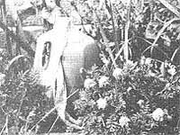
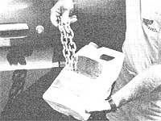
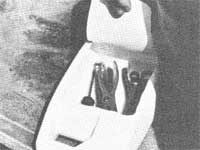
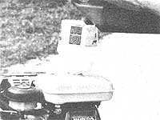
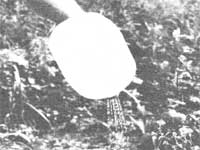
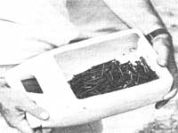

The past ten years might well be remembered as the "decade of shortages" ...but if there's one "commodity" that we'll seemingly never run out of, it's empty, nonbiodegradable plastic jugs! And ever since the flexible flagons replaced glass and tin containers way back when, economy (and ecology) conscious folks have been looking for ways of putting them to good use. Here are several ideas that we-with the help of our readers-have devised to help keep the vinyl vessels out of our landfills.
AUTOMATIC WICK WATERER
When you need to tend to a thirsty plant, but can't be on call every day, an empty milk jug can be just the helping hand you need. Merely fill the container with warm water (and maybe a smidgen of your flowering friend's favorite food), and run an appropriately sized strip of discarded toweling from deep inside the jug to the soil around the roots of your parched companion ...in a pot, a greenhouse bed, or your garden. The terry will act as a wick and transfer the liquid directly to where it's needed!
CHAIN CONTAINER
Whether you pull stumps in the summer or fight snow-covered roads in the winter, a handy chain box will keep your trunk or stowage area shipshape all year round. Simply cut a hand-sized opening in an antifreeze bottle (they're flat-sided and generally tougher than are run-of-the-mill milk jugs) and slide the links inside. It'll keep them quiet, consolidated, and-if you first rub the chain with an oily rag-protected from rust-causing moisture.
ON-THE-ROAD TOOL TRAY
The never-say-die antifreeze jug is also your best choice for an under-the-seat emergency toolbox. Cut a large three-sided flap in one flat surface ...and then stuff the puncture-resistant container full of the most versatile mechanic's hand tools you can find. Of course, to reduce the otherwise inevitable rattling (and to be sure you'll have a means of cleaning up once the dirty work is done), you'll probably want to wrap the implements in a substantial section of cloth before slipping them into the box and stashing it under your car or truck seat.
FIVE-SECOND FUNNEL
If you've ever been at a loss for a funnel when transferring liquids, powders, or other loose materials from one container to another, you'll really appreciate being able to whip up an impromptu filling utensil. Merely trim away the base of a (preferably round) plastic vessel and invert the part that's left (after removing the lid). (By the way, we call this a "five second" funnel not only because it's quick to make, but also since a few liquids especially solvents or caustics-may eat through the plastic rather quickly ...so be aware of this fact before you pour!)
PLANT SPRINKLER
Why buy a watering can when you can make one for nothing? Just take the cap from a one-gallon milk jug and drill a dozen or so 1/16" holes through it. Then fill the container, replace the now-perforated lid, and let the water fall wherever you wish.
NAIL CADDY
A flat, shallow jug works best as a basis for this receptacle, and an antifreeze containerwhich is the right shape-has the added advantage of a stout skin that stubbornly resists nail punctures. Just cut a sizable opening in either side of the plastic vessel, and use the box to hold nails, screws, clips, or what-have-you. When you're working at a particularly precarious site (such as the peak of your roof), you can even tie the bin to a mount by its handle ...to guarantee that the hardware will be there when you reach for it!
|
 |
 |
 |
|
 |
 |
 |